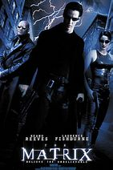

|
1.
The Godfather
(1972)
2hr 55min | Crime, Drama
 9.2/10
 100
Official Trailer
Click for Series Details
|
The Godfather "Don" Vito Corleone is the head of the Corleone mafia family in New York. He is at the event of his daughter's wedding. Michael, Vito's youngest son and a decorated WW II Marine is also present at the wedding. Michael seems to be uninterested in being a part of the family business. Vito is a powerful man, and is kind to all those who give him respect but is ruthless against those who do not. But when a powerful and treacherous rival wants to sell drugs and needs the Don's influence for the same, Vito refuses to do it. What follows is a clash between Vito's fading old values and the new ways which may cause Michael to do the thing he was most reluctant in doing and wage a mob war against all the other mafia families which could tear the Corleone family apart. |
Marlon Brando
James Caan
Al Pacino |
Francis Ford Coppola |
|
2.
The Lord of the Rings: The Return of the King
(2003)
3hr 21min | Adventure, Fantasy
8.9/10
94
Official Trailer
Click for Series Details
|
The Fellowship divides to conquer as Frodo and Sam, with the help and hindrance of Gollum, continue their way to Mount Doom. Gandalf and Pippin ride to Minas Tirith to help defend Gondor while Merry remains with Éowyn and the other Rohan fighters. Aragorn, Legolas, and Gimli seek aid from those that live in the Cursed Mountains. All of these battles have one goal in mind: distract the Eye of Sauron and buy Frodo a little more time to destroy the One Ring. |
Elijah Wood
Viggo Mortensen
Ian McKellen |
Peter Jackson |
|
3.
Inception
(2010)
2hr 28min | Action, Adventure, Sci-Fi
8.8/10
74
Official Trailer
|
Dom Cobb is a skilled thief, the absolute best in the dangerous art of extraction, stealing valuable secrets from deep within the subconscious during the dream state, when the mind is at its most vulnerable. Cobb's rare ability has made him a coveted player in this treacherous new world of corporate espionage, but it has also made him an international fugitive and cost him everything he has ever loved. Now Cobb is being offered a chance at redemption. One last job could give him his life back but only if he can accomplish the impossible, inception. Instead of the perfect heist, Cobb and his team of specialists have to pull off the reverse: their task is not to steal an idea, but to plant one. If they succeed, it could be the perfect crime. But no amount of careful planning or expertise can prepare the team for the dangerous enemy that seems to predict their every move. An enemy that only Cobb could have seen coming. |
Leonardo DiCaprio
Ellen Page
Joseph Gordon-Levitt |
Christopher Nolan |
|
4.
Forrest Gump
(1994)
2hr 22min | Drama, Romance
8.8/10
82
Official Trailer
|
Forrest Gump is a simple man with a low I.Q. but good intentions. He is running through childhood with his best and only friend Jenny. His 'mama' teaches him the ways of life and leaves him to choose his destiny. Forrest joins the army for service in Vietnam, finding new friends called Dan and Bubba, he wins medals, creates a famous shrimp fishing fleet, inspires people to jog, starts a ping-pong craze, creates the smiley, writes bumper stickers and songs, donates to people and meets the president several times. However, this is all irrelevant to Forrest who can only think of his childhood sweetheart Jenny Curran, who has messed up her life. Although in the end all he wants to prove is that anyone can love anyone. |
Tom Hanks
Robin Wright
Gary Sinise |
Robert Zemeckis |
|
5.
Fight Club
(1999)
2hr 19min | Drama
8.8/10
66
Official Trailer
|
A nameless first person narrator (Edward Norton) attends support groups in attempt to subdue his emotional state and relieve his insomniac state. When he meets Marla (Helena Bonham Carter), another fake attendee of support groups, his life seems to become a little more bearable. However when he associates himself with Tyler (Brad Pitt) he is dragged into an underground fight club and soap making scheme. Together the two men spiral out of control and engage in competitive rivalry for love and power. When the narrator is exposed to the hidden agenda of Tyler's fight club, he must accept the awful truth that Tyler may not be who he says he is. |
Brad Pitt
Edward Norton
Meat Loaf |
David Fincher |
|  |
6.
The Matrix
(1999)
2hr 16min | Action, Sci-Fi
8.7/10
73
Official Trailer
Click for Series Details
|
Thomas A. Anderson is a man living two lives. By day he is an average computer programmer and by night a hacker known as Neo. Neo has always questioned his reality, but the truth is far beyond his imagination. Neo finds himself targeted by the police when he is contacted by Morpheus, a legendary computer hacker branded a terrorist by the government. As a rebel against the machines, Neo must confront the agents: super-powerful computer programs devoted to stopping Neo and the entire human rebellion. |
Keanu Reeves
Laurence Fishburne
Hugo Weaving
Carrie-Anne Moss |
Lana Wachowski
Lilly Wachowski
|
|
7.
Saving Private Ryan
(1998)
2hr 49min | War, Drama
8.6/10
91
Official Trailer
|
Opening with the Allied invasion of Normandy on 6 June 1944, members of the 2nd Ranger Battalion under Cpt. Miller fight ashore to secure a beachhead. Amidst the fighting, two brothers are killed in action. Earlier in New Guinea, a third brother is KIA. Their mother, Mrs. Ryan, is to receive all three of the grave telegrams on the same day. The United States Army Chief of Staff, George C. Marshall, is given an opportunity to alleviate some of her grief when he learns of a fourth brother, Private James Ryan, and decides to send out 8 men (Cpt. Miller and select members from 2nd Rangers) to find him and bring him back home to his mother. |
Tom Hanks
Matt Damon
Tom Sizemore |
Steven Spielberg |
|
8.
Interstellar
(2014)
2hr 49min | Adventure, Drama, Sci-Fi
8.6/10
74
Official Trailer
|
Earth's future has been riddled by disasters, famines, and droughts. There is only one way to ensure mankind's survival: Interstellar travel. A newly discovered wormhole in the far reaches of our solar system allows a team of astronauts to go where no man has gone before, a planet that may have the right environment to sustain human life. |
Anne Hathaway
Jessica Chastain
Matthew McConaughey |
Christopher Nolan |
|
9.
The Green Mile
(1999)
3hr 9min | Crime, Drama, Fantasy
8.6/10
00
Official Trailer
|
In the 1930's the lives of guards on Death Row are affected by one of their charges: a black man accused of child murder and rape, yet who has a mysterious gift. |
Tom Hanks
David Morse
Michael Clarke Duncan |
Frank Darabont |
|
10.
Gladiator
(2000)
2hr 35min | Action, Adventure, Drama
8.5/10
67
Official Trailer
|
In 180 A.D. Rome, the weary and dying emperor, Marcus Aurelius, names his loyal and triumphant general, Maximus Decimus Meridius, his successor and protector of Rome, much to the dismay of his haughty and unbalanced son, Commodus. But, instead, death and entrapment await, as the embittered and blind with rage rival rewards Rome's hero with an order for his execution, only to wind up as a slave to the former gladiator, Proximo. From the vast deserts of North Africa, a new Maximo will rise as a gladiator, hacking and slashing his way through all the way up to Mother Rome and the unsuspecting dictator, Commodus. But will the popular general ever find peace in a long-awaited retribution? |
Russell Crowe
Joaquin Phoenix
Connie Nielsen |
Ridley Scott |
|
11.
Terminator 2: Judgment Day
(1991)
2hr 17min | Action, Sci-Fi
8.5/10
75
Official Trailer
Click for Series Details
|
Over 10 years have passed since the first machine called The Terminator tried to kill Sarah Connor and her unborn son, John. The man who will become the future leader of the human resistance against the Machines is now a healthy young boy. However, another Terminator, called the T-1000, is sent back through time by the supercomputer Skynet. This new Terminator is more advanced and more powerful than its predecessor and its mission is to kill John Connor when he's still a child. However, in the Internet and John do not have to face the threat of the T-1000 alone. Another Terminator (identical to the same model that tried and failed to kill Sarah Connor in 1984) is also sent back through time to protect them. Now, the battle for tomorrow has begun. |
Arnold Schwarzenegger
Linda Hamilton
Edward Furlong
|
James Cameron
|
|
12.
Léon: The Professional
(1994)
1hr 50min | Action, Crime, Drama
8.5/10
64
Official Trailer
|
Leon (played by Jean Reno) lives in New York and is a professional hit man. One of his neighbors, Mathilda (Natalie Portman), is a 12-year old girl with family problems, one of which is that her father is a petty criminal. One day, a drug kingpin, Stansfield (Gary Oldman), kills her entire family due to something her father did. Mathilda turns to Leon for help. An unusual relationship forms as she becomes his protégée and learns the assassin's trade and revenge. |
Jean Reno
Gary Oldman
Natalie Portman |
Luc Besson |
|
13.
1917
(2019)
1hr 59min | Drama, War
8.3/10
78
Official Trailer
|
During World War I(April 6, 1917), On a battlefield in Northern France, two British soldiers Lance Corporal Will Schofield and Lance Corporal Tom Blake receive seemingly impossible orders. In a race against time, they must cross over into enemy territory to deliver a message that could potentially save 1,600 of their fellow comrades including Blake's own brother. |
Dean-Charles Chapman
Daniel Mays
George MacKay
|
Sam Mendes
|
|
14.
A Beautiful Mind
(2001)
2hr 15min | Biography, Drama
8.2/10
72
Official Trailer
|
At Princeton University, John Nash struggles to make a worthwhile contribution to serve as his legacy to the world of mathematics. He finally makes a revolutionary breakthrough that will eventually earn him the Nobel Prize. After graduate school he turns to teaching, becoming romantically involved with his student Alicia. Meanwhile the government asks his help with breaking Soviet codes, which soon gets him involved in a terrifying conspiracy plot. Nash grows more and more paranoid until a discovery that turns his entire world upside down. Now it is only with Alicia's help that he will be able to recover his mental strength and regain his status as the great mathematician we know him as today. |
Russell Crowe
Ed Harris
Jennifer Connelly |
Ron Howard |
 |
15.
Die Hard
(1988)
2hr 12min | Action, Thriller
8.2/10
72
Official Trailer
Click for Series Details
|
NYPD cop John McClane goes on a Christmas vacation to visit his wife Holly John McTiernanin Los Angeles where she works for the Nakatomi Corporation. While they are at the Nakatomi headquarters, a group of robbers led by Hans Gruber take control of the building and hold everyone hostage, with the exception of John, while they plan to perform a lucrative heist. Unable to escape and with no immediate police response, John is forced to take matters into his own hands. |
Bruce Willis
Alan Rickman
Bonnie Bedelia |
John McTiernan |
 |
16.
Harry Potter and the Deathly Hallows, Part 2
(2011)
2hr 10min | Mystery, Fantasy, Family
8.1/10
85
Official Trailer
Click for Series Details
|
Harry (Daniel Radcliffe), Ron (Rupert Grint), and Hermione (Emma Watson) continue to find the rest of Voldemort's (Ralph Fiennes') Horcruxes, until Harry discovers that one is at Hogwarts, they flee there as soon as possible, but Voldemort instantly finds out about their mission. The battle is drawn at Hogwarts as many people fight to protect Harry. Harry then realizes that people are dying constantly for his mistakes and then eventually fights Voldemort for the last time. Along the way, crucial secrets are unravelled, and the mysterious, but legendary, Deathly Hallows reappear. |
Daniel Radcliffe
Emma Watson
Rupert Grint
Ralph Fiennes
Michael Gambon
|
David Yates
|
 |
17.
Logan
(2017)
2hr 17min | Sci-Fi, Action, Drama
8.1/10
77
Official Trailer
Click for Series Details
|
In 2029 the mutant population has shrunken significantly due to genetically modified plants designed to reduce mutant powers and the X-Men have disbanded. Logan, whose power to self-heal is dwindling, has surrendered himself to alcohol and now earns a living as a chauffeur. He takes care of the ailing old Professor X whom he keeps hidden away. One day, a female stranger asks Logan to drive a girl named Laura to the Canadian border. At first he refuses, but the Professor has been waiting for a long time for her to appear. Laura possesses an extraordinary fighting prowess and is in many ways like Wolverine. She is pursued by sinister figures working for a powerful corporation; this is because they made her, with Logan's DNA. A decrepit Logan is forced to ask himself if he can or even wants to put his remaining powers to good use. It would appear that in the near-future, the times in which they were able put the world to rights with razor sharp claws and telepathic powers are now over. |
Hugh Jackman
Patrick Stewart
Dafne Keen
|
James Mangold |
 |
18.
Mad Max: Fury Road
(2015)
2hr | Sci_Fi, Action, Adventure
8.1/10
90
Official Trailer
|
The former policeman Max is captured by the War Boys tribe, commanded by the Immortal Joe and assigned to be blood donor for the Wat Boy Nux who is sick. Meanwhile Imperator Furiosa drives a tank truck to collect gasoline for Joe. However her true intention is to flee from the tyrannical Joe with his five women selected to breed hidden in the truck to her homeland. Immortal Joe commands a party to hunt down Furiosa and Max is chained to Nux's car. Furiosa heads the truck into a sand storm but Nux continues to pursue her. After the storm, Max succeeds to escape from the car and brings Nux chained with him. He sees Furiosa and the five wives and decides to flee in their truck; but there is a secret to operate the truck and he teams up with Furiosa, leaving Nux in the desert. When Joe's gang arrives, they retrieve Nux and follow Furiosa. Will Max and the women succeed in escaping from Joe's gang? |
Tom Hardy
Charlize Theron
Nicholas Hoult
|
George Miller
|
 |
19.
Casino Royale
(2006)
2hr 24min | Thriller, Action, Adventure
8/10
80
Official Trailer
Click for Series Details
|
James Bond (Daniel Craig) goes on his first mission as a 00. Le Chiffre (Mads Mikkelsen) is a banker to the world's terrorists. He is participating in a poker game at Montenegro, where he must win back his money, in order to stay safe amongst the terrorist market. The boss of MI6, known simply as "M" (Dame Judi Dench) sends Bond, along with Vesper Lynd Eva Green) to attend this game and prevent Le Chiffre from winning. Bond, using help from Felix Leiter (Jeffrey Wright), Rene Mathis (Giancarlo Giannini), and having Vesper pose as his partner, enters the most important poker game in his already dangerous career. But if Bond defeats Le Chiffre, will he and Vesper Lynd remain safe? |
Daniel Craig
Judi Dench
Eva Green
Mads Mikkelsen
|
Martin Campbell
|
|
20.
Pirates of the Caribbean: The Curse of the Black Pearl
(2003)
2hr 23min | Action, Adventure, Fantasy
8/10
63
Official Trailer
Click for Series Details
|
William Turner, a resourceful young blacksmith, teams up with the eccentric pirate "Captain" Jack Sparrow to save his love, the Governor's daughter, Elizabeth Swann, who has been mistakenly captured by the clever and treacherous Barbossa, a former ally of Jack, to make a blood sacrifice so as to end the curse that has been casted upon him and his crew. Will and Jack steal a ship from the Royal Navy and arrive at Tortuga, a pirate port. There Jack meets his friend Joshamee Gibbs and with a buccaneer and "able bodied" crew, set sail to save Elizabeth and take back the Black Pearl. Meanwhile, Barbossa discovers that not Elizabeth's but someone else's blood was required for the sacrifice. Whose blood is it? |
Johnny Depp
Geoffrey Rush
Orlando Bloom
Keira Knightley
Kevin McNally
|
Gore Verbinski
|
 |
21.
Ip Man
(2008)
1hr 46min | Biography, Action, Drama
8/10
59
Official Trailer
Click for Series Details
|
Dramatizes the life of Yip Man (1893-1972) in the mid to late 1930s. Foshun is a prosperous city with many martial arts schools. Yip, who practices Wing Chun, is the local master. When a rough gang comes to town, it's Yip they must challenge. Then, Japan invades China. Yip and his family live in poverty, with Yip taking any work for food. General Miura, now in charge, stages martial arts fights between Chinese and his men: winners get extra rice. When the general's attaché murders a colleague of Yip's, Yip must step forward. At the same time, the ruffians return to town, this time threatening a local cotton mill. Can Yip protect the mill and also face Miura and certain death? |
Donnie Yen
Kent Cheng
Lynn Hung
Simon Yam
Siu-Wong Fan
|
Wilson_Yip
|
 |
22.
The Bourne Ultimatum
(2007)
1hr 55min | Action, Mystery, Thriller
8/10
85
Official Trailer
Click for Series Details
|
Bourne is once again brought out of hiding, this time inadvertently by London-based reporter Simon Ross who is trying to unveil Operation Blackbriar--an upgrade to Project Treadstone--in a series of newspaper columns. Bourne sets up a meeting with Ross and realizes instantly they're being scanned. Information from the reporter stirs a new set of memories, and Bourne must finally, ultimately, uncover his dark past whilst dodging The Company's best efforts in trying to eradicate him. |
Matt Damon
Julia Stiles
David Strathairn
|
Paul Greengrass
|
 |
23.
The Raid 2
(2014)
2hr 30min | Action, Crime, Thriller
8/10
71
Official Trailer
Click for Series Details
|
He thought it was over. After fighting his way out of a building filled with gangsters and madmen - a fight that left the bodies of police and gangsters alike piled in the halls - rookie Jakarta cop Rama thought it was done and he could resume a normal life. He couldn't have been more wrong. Formidable though they may have been, Rama's opponents in that fateful building were nothing more than small fish swimming in a pond much larger than he ever dreamed possible. And his triumph over the small fry has attracted the attention of the predators farther up the food chain. His family at risk, Rama has only one choice to protect his infant son and wife: He must go undercover to enter the criminal underworld himself and climb through the hierarchy of competing forces until it leads him to the corrupt politicians and police pulling the strings at the top of the heap. And so Rama begins a new odyssey of violence, a journey that will force him to set aside his own life and history and take on a new identity as the violent offender "Yuda." In prison he must gain the confidence of Uco - the son of a prominent gang kingpin - to join the gang himself, laying his own life on the line in a desperate all-or-nothing gambit to bring the whole rotten enterprise to an end. |
Iko Uwais
Arifin Putra
Yayan Ruhian
Oka Antara
Tio_Pakusadewo
|
Gareth Evans
|
|
24.
Avatar
(2009)
2hr 42min | Action, Adventure, Fantasy
7.8/10
83
Official Trailer
|
When his brother is killed in a robbery, paraplegic Marine Jake Sully decides to take his place in a mission on the distant world of Pandora. There he learns of greedy corporate figurehead Parker Selfridge's intentions of driving off the native humanoid "Na'vi" in order to mine for the precious material scattered throughout their rich woodland. In exchange for the spinal surgery that will fix his legs, Jake gathers knowledge, of the Indigenous Race and their Culture, for the cooperating military unit spearheaded by gung-ho Colonel Quaritch, while simultaneously attempting to infiltrate the Na'vi people with the use of an "avatar" identity. While Jake begins to bond with the native tribe and quickly falls in love with the beautiful alien Neytiri, the restless Colonel moves forward with his ruthless extermination tactics, forcing the soldier to take a stand - and fight back in an epic battle for the fate of Pandora. |
Sam Worthington
Zoe Saldana
Sigourney Weaver
Stephen Lang
Michelle Rodriguez
|
James Cameron
|
 |
25.
Mission: Impossible - Fallout
(2018)
2hr 27min | Action, Thriller, Adventure
7.7/10
86
Official Trailer
Click for Series Details
|
After a mission goes wrong and anarchist Solomon Lane (Sean Harris) escapes custody, Ethan Hunt (Tom Cruise) and his IMF team are blamed and their loyalty is questioned. They attempt to fulfill their initial mission and recapture Lane while also trying to outrun a ruthless CIA agent (Henry Cavill) tasked with taking them out. As Hunt fends off these old and new threats, he also realizes allies within IMF might have other motives. Produced, written and directed by Christopher McQuarrie. Alec Baldwin, Angela Bassett, Rebecca Ferguson, Simon Pegg, Ving Rhames and Michelle Monaghan co-star. |
Tom Cruise
Henry Cavill
Rebecca Ferguson
Simon Pegg
Ving Rhames
|
Christopher McQuarrie
|
|
26.
The Wolf of Wall Street
(2013)
3hr | Biography, Crime, Drama
8.2/10
75
Official Trailer
|
In the early 1990s, Jordan Belfort teamed with his partner Donny Azoff and started brokerage firm Stratford-Oakmont. Their company quickly grows from a staff of 20 to a staff of more than 250 and their status in the trading community and Wall Street grows exponentially. So much that companies file their initial public offerings through them. As their status grows, so do the amount of substances they abuse, and so do their lies. They draw attention like no other, throwing lavish parties for their staff when they hit the jackpot on high trades. That ultimately leads to Belfort featured on the cover of Forbes Magazine, being called "The Wolf Of Wall St.". With the FBI onto Belfort's trading schemes, he devises new ways to cover his tracks and watch his fortune grow. Belfort ultimately comes up with a scheme to stash their cash in a European bank. But with the FBI watching him like a hawk, how long will Belfort and Azoff be able to maintain their elaborate wealth and luxurious lifestyles? |
Leonardo DiCaprio
Jonah Hill
Margot Robbie
Matthew McConaughey
|
Martin Scorsese
|
|
27.
Prisoners
(2013)
2hr 33min | Crime, Drama, Mystery
8.1/10
70
Official Trailer
|
How far would you go to protect your family? Keller Dover is facing every parent's worst nightmare. His six-year-old daughter, Anna, is missing, together with her young friend, Joy, and as minutes turn to hours, panic sets in. The only lead is a dilapidated RV that had earlier been parked on their street. Heading the investigation, Detective Loki arrests its driver, Alex Jones, but a lack of evidence forces his release. As the police pursue multiple leads and pressure mounts, knowing his child's life is at stake the frantic Dover decides he has no choice but to take matters into his own hands. But just how far will this desperate father go to protect his family? |
Hugh Jackman
Jake Gyllenhaal
Viola Davis
Dylan Minnette
Terrence Howard
|
Denis Villeneuve
|
|
28.
Gone Girl
(2014)
2hr 29min | Mystery, Thriller, Drama
8.1/10
79
Official Trailer
|
Nick Dunne, a small town guy who made good in the big city as a magazine writer blames the recession and the loss of his job for the decline of his marriage to his intellectually superior wife with a substantial trust fund. Questions of his motives and character begin to arise after his wife's disappearance on the morning of their fifth anniversary. As the search for his missing wife plays out over the ensuing days, guilty suspicions are fueled into a national frenzy by the media circus camped outside his house. Is this idyllic, everyman truly capable of murdering his wife? |
Ben Affleck
Rosamund Pike
Neil Patrick Harris
Kim Dickens
|
David Fincher
|
|
29.
Room
(2015)
1hr 58min | Drama, Thriller
8.1/10
86
Official Trailer
|
ROOM tells the extraordinary story of Jack, a spirited 5-year-old who is looked after by his loving and devoted mother. Like any good mother, Ma dedicates herself to keeping Jack happy and safe, nurturing him with warmth and love and doing typical things like playing games and telling stories. Their life, however, is anything but typical--they are trapped--confined to a 10-by-10-foot space that Ma has euphemistically named Room. Ma has created a whole universe for Jack within Room, and she will stop at nothing to ensure that, even in this treacherous environment, Jack is able to live a complete and fulfilling life. But as Jack's curiosity about their situation grows, and Ma's resilience reaches its breaking point, they enact a risky plan to escape, ultimately bringing them face-to-face with what may turn out to be the scariest thing yet: the real world. |
Brie Larson
Jacob Tremblay
Joan Allen
|
Lenny Abrahamson
|
|
30.
The Revenant
(2015)
2hr 36min | Action, Adventure, Drama
8/10
76
Official Trailer
|
In the untamed and unforgiving wilderness of mid-winter snow-capped Missouri, the experienced nineteenth-century tracker, Hugh Glass, and his son, Hawk, lead a hunting and trapping expedition in the uncharted territory of the fierce Indian tribe, Arikara. As the party of trappers struggle to navigate back to the distant Fort Kiowa, a swift and devastating attack by a formidable grizzly bear leaves a brutally mauled Glass on the brink of death, double-crossed and abandoned by his men. Now, only Hugh's rabid desire to live can help him survive the piercing cold and the grave dangers in one of the world's most inhospitable environments, giving him the strength to drag his unrecognisable carcass and exact his revenge. However, will the man who has returned from the dead taste the ambrosial fruit of retribution? |
Leonardo DiCaprio
Tom Hardy
Domhnall Gleeson
Will Poulter
|
Alejandro G. Iñárritu
|
 |
31.
Togo
(2019)
1hr 53min | Biography, Adventure, Drama
8.0/10
69
Official Trailer
|
This film fictionalizes the relationship between two pivotal figures in the 1925 serum run to Nome: the Norwegian sled dog breeder, trainer, and musher Leonhard Seppala (Willem Dafoe) and his lead sled dog Togo – an exceptional Siberian Husky. The two of them endure the longest and most perilous leg of the historic effort to transport diphtheria antitoxin to an isolated small town in northeast Alaska. |
Willem Dafoe
Julianne Nicholson
Christopher Heyerdahl
|
Ericson Core
|
|
32.
The Perks of Being a Wallflower
(2012)
1hr 43min | Drama, Romance
8/10
67
Official Trailer
|
As a freshmen in High School, Charlie, portrayed by Logan Lerman, struggles with bullies, depression, bad influences and girls. Based on the book written by Stephan Chbosky, the Perks of Being a Wallflower thrives as a film. While Charlie wants to survive high school, he forces himself to participate in school functions, to prevent himself from falling back into his depression. The not-so-typical teenager finds himself being taken under the wing by a few seniors, and has never been so excited to have friends again. Finally being happy, Charlie experiments with drugs, sex and the party scene, but underlying problems from the past cause Charlie to spiral out of control. |
Leonardo DiCaprio
Emma Watson
Ezra Miller
|
Stephen Chbosky
|
 |
33.
()
2hr 12min | Action, Crime, Thriller, Adventure
/10
00
Official Trailer
|
|
|
|
|
34.
()
2hr 12min | Action, Crime, Thriller, Adventure
/10
00
Official Trailer
|
|
|
|